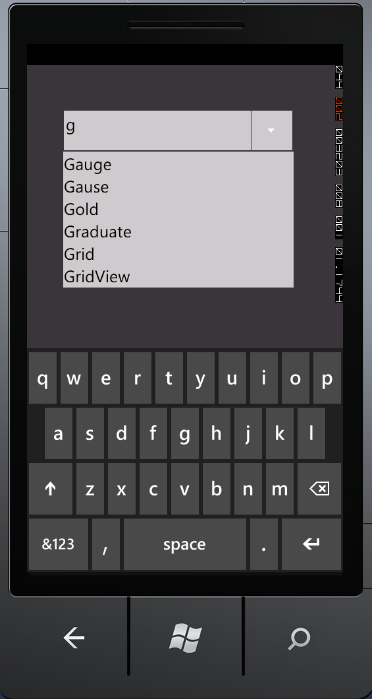

To create a Windows Phone application and deploy Essential Tools for Windows Phone, refer to section 3 Getting Started. This section covers how to add AutoComplete control to this application.
The AutoComplete control can be added to the application by using either XAML or procedural code. The following code snippet can be used to add the AutoComplete control to the application.
|
[C#]
AutoComplete AutoComplete1 = new AutoComplete(); List<String> customSource = new List<String>(); customSource.Add("WF"); customSource.Add("WPF"); customSource.Add("Silverlight"); customSource.Add("Asp.Net"); customSource.Add("Mvc"); customSource.Add("Tools"); customSource.Add("Diagram"); customSource.Add("Gauge"); customSource.Add("Gause"); customSource.Add("GridView"); customSource.Add("Graduate"); customSource.Add("Gold"); customSource.Add("Chart"); customSource.Add("Business Intelligence"); customSource.Add("Schedule"); customSource.Add("Grid"); customSource.Add("DocIo"); customSource.Add("XlsIo"); customSource.Add("Pdf"); this.autoComplete.CustomSource = customSource;
|

Figure 13: AutoComplete Control